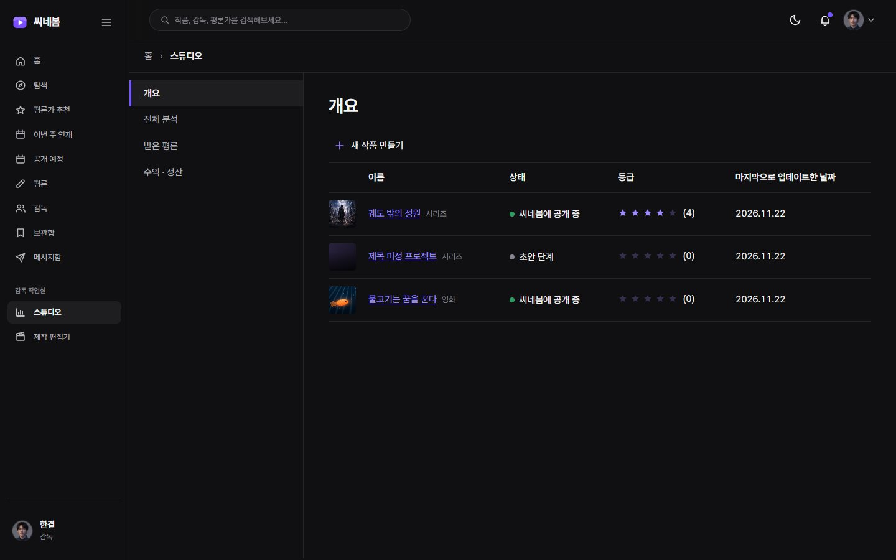
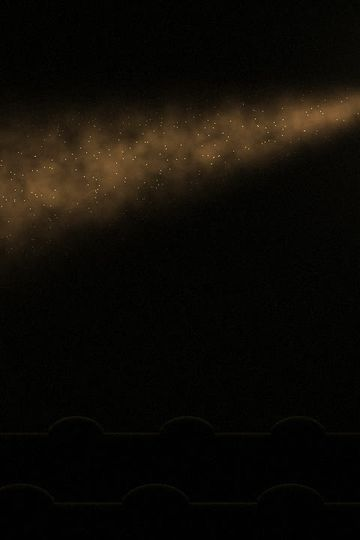

작품 제작
씨네봄 스튜디오에서 영화와 시리즈를 등록하고 회차를 연재합니다.
OFFICIAL CINEMA
정식 감독은 작품을 직접 올리고, 동료 작품을 감상하며 평론에도 참여합니다. 도전관은 회원 누구나 유튜브 링크로 작품을 선보이는 별도 공간이에요.
씨네봄 스튜디오에서 영화와 시리즈를 등록하고 회차를 연재합니다.
평론가와 정식 감독이 서로의 작품을 끝까지 보고 별점과 글을 남깁니다.
작품 페이지에서 왼쪽은 선택 회차와 평론, 오른쪽은 회차 목록을 보여 줍니다.
제작 화면은 AI 없이 시작점과 끝점을 정해 회차 영상을 간단히 다듬습니다.
HOW IT WORKS
정식 감독은 도전관 업로더와 구분해 심사로 선정하며, 씨네봄 작품관의 제작·연재와 평론 활동을 맡습니다.
WIN-WIN
정식 감독도 다른 작품의 평론에 참여합니다. 역할별 활동은 지원·심사 후 열려요.
| 작품 길이 | 심사비 | 평론가 몫 (절반) |
|---|---|---|
| 20분 이하 | 12,000원 | 6,000원 |
| 20분 넘고 60분 이하 | 18,000원 | 9,000원 |
| 60분 넘음 | 24,000원 | 12,000원 |
이 표는 회원이 도전관 작품의 평론가 심사를 신청할 때 적용되는 별도 안내입니다. 정식 감독 활동은 도전관의 유튜브 출품 절차와 분리되어 운영돼요.
NOW SHOWING

떠난 사람의 흔적을 따라가는 네 편의 이야기


LOBBY





안녕하세요. 인공지능 스트리밍 서비스 씨네봄을 찾아 주셔서 진심으로 감사드립니다.
이번 감독 모집은 도전관의 유튜브 출품자 모집과 구분되는 씨네봄 정식 작품관의 창작자 선발입니다. 선정된 감독은 영화·시리즈를 올리고 회차를 연재합니다.
감독은 작품을 만드는 동시에 다른 작품을 보고 평론할 수도 있습니다. 평론가와 감독이 함께 쌓는 글과 별점이 작품을 고르는 시청자에게 길잡이가 됩니다.
씨네봄에서는 조회수나 알고리즘보다 작품과 평론을 중심으로 시청자가 선택할 수 있게 만들고 있습니다. 좋은 작품을 제대로 소개하고, 좋은 글을 쓰는 사람이 그에 맞는 활동을 이어 가는 곳을 만들고 싶습니다.
부디 많은 관심과 지원을 부탁드립니다. 대망의 2기를 모집합니다.
ADMIT ONE
지원서는 감독 또는 평론가 중 한 분야로 작성해 주세요. 정식 감독은 승인 뒤 별도의 평론가 지원 없이 평론 활동에도 참여할 수 있습니다.
도전관 출품자가 아니라 씨네봄 정식 작품관의 창작자로 선정됩니다. 영화·시리즈를 제작하고 연재하며, 다른 작품의 평론에도 참여합니다. AI 작품과 실사 작품을 모두 환영합니다.
작품을 끝까지 보고 별점과 평론을 남깁니다. 평론은 작품 페이지와 글쓴이 프로필에 쌓여 시청자의 선택을 돕습니다.
SCHEDULE
지원서는 운영진이 한 편씩 직접 읽고 봅니다.
CRITERIA
장비나 경력보다 이 사람만의 시선이 있는지를 봅니다.
완성도보다, 이 사람만 할 수 있는 이야기와 관점이 있는지 봅니다.
감독은 약속한 연재 일정을 지킬 수 있는지, 평론가는 꾸준히 쓸 수 있는지 봅니다.
AI 사용 여부와 본인의 작업 기여도를 사실대로 밝힙니다. 흔한 친목질이나 인맥으로 서로 밀어주고 평가에 끼어드는 일은 하지 않습니다.
취향과 의견이 달라도 작품과 사람을 존중하며 이야기합니다.
정식 감독은 신청서와 작품 계획을 심사받아 선정되고, 씨네봄 스튜디오에서 작품·회차를 직접 관리합니다. 도전관은 회원 누구나 유튜브 링크로 작품을 올리는 공개 공간이며 정식 감독 모집과 별도로 운영됩니다.
네. 정식 감독은 다른 작품을 끝까지 보고 평론과 별점을 남길 수 있습니다. 내 작품에는 평론을 쓸 수 없고, 작품 심사와 마찬가지로 블라인드 기준을 따릅니다.
도전관 작품을 올린 회원이 평론가 심사를 별도로 신청할 때 작품 길이에 따른 심사비가 적용됩니다. 이 제도는 정식 감독의 작품 등록·평론 활동과 구분됩니다.
한 작품에 평론 참여자가 3명 이상 모이면 별점과 글이 함께 공개됩니다. 평론가는 심사함에 작품을 3편씩 받고, 정식 감독도 평론함에 참여할 수 있습니다.
도전관 작품의 평론가 심사에 참여하면 심사비의 절반을 참여자들이 나눠 받고, 매주 금요일에 정산합니다. 참여 인원에 따라 달라지며, 정식 감독의 작품 활동과는 별도 기준으로 운영됩니다.
아니요. 직접 찍은 인디 영화, 일부만 AI를 쓴 작품, 전부 AI로 만든 작품 모두 받습니다. 작품마다 어떻게 만들었는지만 정확히 표기하면 됩니다.
마감일은 따로 정하지 않았습니다. 대신 심사를 꼼꼼히 하느라 결과 안내까지 꽤 오래 걸릴 수 있으니 너그럽게 기다려 주세요.
직접 만든 1분(60초) 이내 예고편을 감독 지원서에서 영상 파일로 바로 첨부합니다. 파일이 너무 크면 유튜브 ‘일부 공개’나 구글 드라이브 같은 공유 링크로 내도 됩니다. 60초를 넘는 영상은 받지 않습니다.
아니요. 이력보다 앞으로의 계획과 마음가짐, 작업 방식을 봅니다. 예고편 한 편이면 충분합니다.
영화 《원스》(2007)와 시리즈 《도깨비》를 직접 감상한 뒤 지원서에 각각 별점과 한 줄 평, 평론을 써 주세요. 작품은 각자 이용하는 스트리밍 서비스에서 보시면 됩니다.
없습니다. 제출하면 접수가 끝납니다. 결과는 지원서에 적은 메일로 알려 드립니다.
지원서는 한 분야로 제출해 주세요. 정식 감독은 선정된 뒤 다른 작품의 평론 활동에도 참여할 수 있어 평론가 지원서를 다시 낼 필요는 없습니다.
쓰는 내용은 지금 쓰는 브라우저에만 임시 저장됩니다. 다른 기기나 시크릿 창에서는 보이지 않아요. 첨부한 영상 파일은 저장되지 않으니 제출 직전에 다시 골라 주세요.